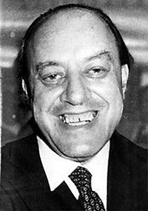
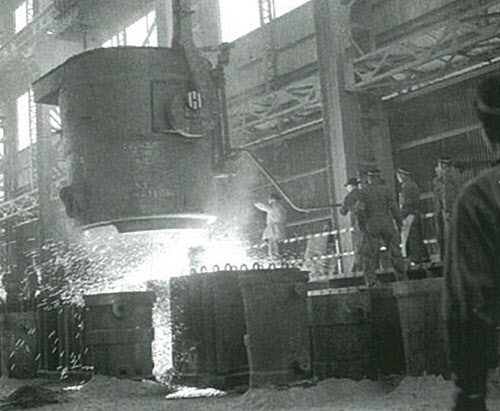
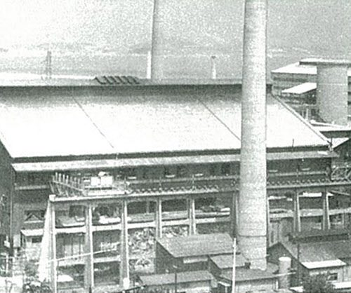
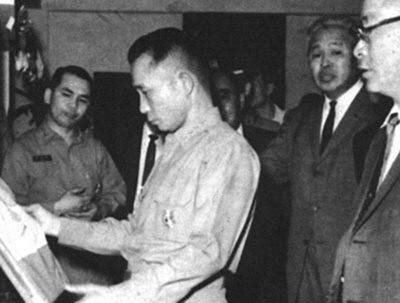

보도일 2014-10-13출처 조선일보 프리미엄조선 연재
철강은 ‘산업의 쌀’이며, 철강 없는 산업화는 없다. 이것은 대통령 이승만도 알고 있었다. 오랜 미국 망명생활에서 터득한 지식의 하나였다. 한국정부는 1955년부터 서서히 전후(戰後)의 사회적 안정을 회복하면서 산업화에 눈을 뜨게 되지만, 정부가 부산을 피난수도로 삼고 있던 시절에도 긴급 국책사업으로 ‘철강공장 건설’을 추진했다. 김용삼의 『이승만과 기업가 시대』를 참고할 만하다.
<이승만이 철강산업에 대한 의지를 피력한 것은 1953년 4월 4일이다. 이날 이승만은 내각에 다음과 같이 특별 지시를 내렸다.
“전쟁이 끝나면 하루 빨리 부흥 사업을 펼쳐야 할 것이니 그 기초가 되는 철강산업 진흥책을 마련하라. 특히 주택건설사업을 위한 함석, 철판 등의 공급을 담당할 제강사업 건설계획을 우선적으로 강력히 추진하라.”
관계부처는 철강산업에 대한 기본 대책을 검토한 끝에 대통령령으로 인천의 대한중공업공사를 국영기업으로 출범시키고, 파괴된 공장 복구를 위해 연산 5만 톤 규모의 평로를 건설하여 제강공장과 압연공장을 재건하기로 결정했다.>
그러나 진짜 결정권은 서울에 파견된 미국 경제고문관이 쥐고 있었다. 미국의 무상원조가 정부 예산의 절반을 차지하는 국가가 1953년의 대한민국이었던 것이다. “피난민들의 민생문제부터 해결하라”는 미국의 반대에 부닥친 이승만은 국고 보유 140만 달러를 ‘철강공장 건설’에 투입한다는 심각한 결심을 세우고 서독과 교섭하게 된다. 1953년과 1954년에 걸친 ‘철강을 위한’ 이승만 정부의 대(對)서독 교섭, 여기부터 등장하는 주요인물이 앞(연재 15회)에서 소개한 유대인 아이젠버그다. 김용삼의 그 책에도 이렇게 나와 있다.

<서독 정부는 일본에서 활동하며 유엔군에 물자를 공급하던 유태인 중개상 아이젠버그를 교섭 상대로 내세워 적극적인 수주활동을 벌였다. 1954년 실시된 대한중공업공사의 5만 톤 규모 평로 제강공사 국제입찰에는 미국, 스위스, 서독의 전문회사가 참여하여 경합을 벌였다. 그 결과 서독 최대의 제철시설 제조회사인 데마그사가 공사를 수주했다. 이어 1956년 2단계로 실시한 380만 달러의 압연공장 건설사업도 데마그사에게 돌아갔다.
이승만은 제강공장 건설공사가 진행되는 인천의 대한중공업 현장을 수시로 방문하여 작업을 독려했다. 마침내 1956년 하반기에 평로 제강공장 건설이 완공되어 첫 출강식이 거행됐다. 평로 제강공장에 이어 압연공장 건설이 완료되면서 본격적인 생산이 개시된 것은 1959년이다. 이것이 우리나라 철강산업 발전의 결정적 전기가 된다.>

또한, 이승만은 철강공장 건설과정에서 한국 기술자들과 관리자들을 국비로 서독에 유학을 보냈는데, 그들을 경무대로 불러 일일이 장학증서를 주면서 “열심히 공부하고 오너라. 우리가 참다운 독립국가가 되려면 제철공장이 있어야 돼. 여러분이 그걸 해내야 한다”며 어깨를 어루만져 주었다고 한다. 이때 보낸 유학생들 가운데 김재관이 있었다.
1957년부터 십여 년 동안 대한중공업에 근무하다 1968년 포항제철 창업요원으로 참여해서 한국 제철엔지니어링의 제1세대 최고 권위자로 성장하게 되는 백덕현(포항제철 기술부문 총괄담당 부사장, 포항제철소장, 대한금속학회장 역임)은 이대환이 엮은『쇳물에 흐르는 푸른 청춘』에서 다음과 같은 회고를 남겼다.
<대학을 졸업한 1957년, 한국은 ‘산업화’와 멀리 떨어져 전후의 절대빈곤에 시달리는 나라였다. 다행히 나는 전공을 살릴 직장과 만났다. 대한중공업. 뒷날에 인천중공업, 인천제철, INI스틸로 이름을 고치는 그 회사에 중유를 때는 평로(철광석을 넣고 한쪽 면에서 연료를 공급, 가열하여 쇳물을 뽑아내는 평평한 용기 형태의 로)가 있었다. 정부는 고철 수출을 금지하였고, 평로가 전국에서 실려온 고철들을 녹여댔다. 그러니까 창설 포항제철의 기술부 차장을 맡은 당시, 나는 한 번도 고로를 직접 본 적이 없는 엔지니어였다.

상공부 금속과장에서 옮겨온 유석기 기술부장, 대한중석에서 옮겨온 이상수 기술부 차장, 그리고 나. 포스코 최초의 설비기본계획을 맡은 우리 셋은 ‘이래선 안 되겠다’고 판단했는데, 마침 박태준 사장의 방침에 따라 일본 연수를 떠날 수 있었다. 1968년 11월 김학기, 김종진, 김성수, 성병재 씨 등과 같이 출발한 우리 팀은 이듬해 2월에 돌아왔다.
처음 본 상대는 히로하타제철소. 고로 넷에 제강 둘의 조강 연산 400만 톤 규모였으니, 그때 수준으로는 세계적 대형 제철소인 셈이다. 무로랑제철소에도 갔다. 비로소 우리는 제철소에 대한 실감을 챙길 수 있었다.
‘정말 대단한 거구나.’
이것이 우리의 솔직한 심정이었다.>
그러니까 박정희가 출국과 귀국에서 루프트한자 항공기를 얻어 타고 1964년 12월 6일부터 15일까지 서독을 방문한 당시를 기준으로 삼는 경우, 한국 땅에는 ‘대형 용광로(고로)’를 갖춘 종합제철소가 물론 없었을 뿐만 아니라 거기서 근무해본 제철기술자가 한 명도 존재하지 않았다. 어쩌면 그것을 구경한 제철기술자조차 한 명도 없었을 것이다.
그렇게 낙후된 국가의 대통령으로서 열흘 남짓 서독을 방문한 박정희의 뇌리에 강렬히 박힌 것은 최소한 세 가지였다. ‘아우토반’이라는 고속도로, 제철공장, 그리고 이역만리 타국에서 피땀 흘리는 우리 광부들과 간호사들. 눈물을 멈추기 어려웠던 그들과의 만남은 여러분의 조국에도 고속도로를 깔고 제철공장을 세워 기필코 근대화에 성공하겠다는 결의를 더 굳세게 해줬을 것이다.
그래서 박정희는 그들 앞에서 역설할 수 있었으리라.
“진정한 국가재건을 위해서는 국가이익 앞에 사리(私利)를 희생시키는 전 국민적인 노력이 필요합니다.”
국익을 위한 사리 희생, 국익 최우선주의. 이것은 박정희의 것이고 박태준의 것이었다. 박태준은 박정희 사후(死後)에도 32년을 더 지상에 머물렀으나 그 원칙을 어긴 적이 단 한 번도 없었다.
종합제철은 철 생산의 제선‧제강‧압연 공정을 일관으로 처리하는 설비를 두루 갖춰 모든 형태의 철강제품을 생산한다는 뜻이다. 1964년 겨울, 서독의 박정희는 종합제철 건설에 대한 집념을 새삼 강력히 표명한다. 조갑제의 『박정희』에 다음과 같은 장면이 나온다.
<1964년 12월 11일 박 대통령 일행은 베를린 공과대학을 방문한 뒤 지멘스 공장, AEG전기공장, 독일개발협회를 방문·시찰했다. 이날 박 대통령은 철강산업의 실상을 직접 눈으로 확인했다. 박 대통령을 공장으로 안내한 지멘스사의 브레마이어 소장은 “각하, 철강이 없으면 근대화가 불가능합니다”라고 말했다.
박정희는 브레마이어에게 “저건 짓는데 얼마나 듭니까?”, “저건 어떤 용도로 운영됩니까?” 등등 상세하게 질문을 했다. (중략) 박 대통령은 장기영 부총리와 박충훈 장관을 방으로 불렀다. 박정희는 두 사람에게 “기간산업을 발전시키려면 제철공장 없이는 안 되겠구먼. 우리도 제철공장을 지어야겠소. 돌아가면 제철공장 건설계획을 세워 보고하시오”라고 지시했다.>
12월 13일 아침의 교포 유학생 초청 조찬회에는 ‘한국 강철산업 발전계획 시안’을 박정희에게 선물한 학자도 있었다. 그가 김재관 박사다. 이승만 대통령 시절에 국비로 독일 유학을 나온 그 사람이다. 뒷날에 귀국하여 국방과학연구소 부소장, 한국표준연구소 소장을 역임하게 되는 김재관의 손을 잡은 박정희는 “정말 고맙습니다. 돌아가서 꼭 철강회사를 만들 생각입니다. 잘 보겠습니다”라고 단단히 약속을 걸었다. 자기다짐이기도 했을 것이다.
1961년 국가재건최고회의의 제1차 경제개발 5개년계획에서 근대화를 성공하기 위한 기간산업 중의 기간산업으로 기름과 철강을 꼽으면서, 정유공장과 종합제철공장을 반드시 건설하겠다고 스스로 다짐했던 박정희. 정유공장은 처음 의도와 달리 미국 자본을 끌어들여 추진했지만, 종합제철공장은 그 뒤로 3년이 지나도 아무런 실질적 진척을 보지 못하고 있었다.

서독 방문을 마친 박정희가 귀국했을 때, 대한중석 사장에 내정돼 있던 박태준은 대한중석 경영실태를 손바닥에 넣고 청와대로 들어가 대통령에게 ‘정부와 여당의 경영 불간섭’에 대해 ‘흔쾌한 약속’을 받아낸다.(22회 참조) 그리고 박태준은 대한중석 경영정상화에 몰두하고, 박정희는 그러고 있는 박태준을 눈여겨 지켜본다.
1965년 5월, 박정희는 미국 방문에 나선다. 당시로는 세계 최대 철강도시로 꼽힌 피츠버그시를 찾아가는 일정이 포함된다. 그의 피츠버그 방문은 무엇보다도 ‘종합제철’ 때문이었다. 그것은 박정희가 박태준에게 모종의 ‘특명’을 내릴 시간이 다가왔다는 뜻이기도 했다.